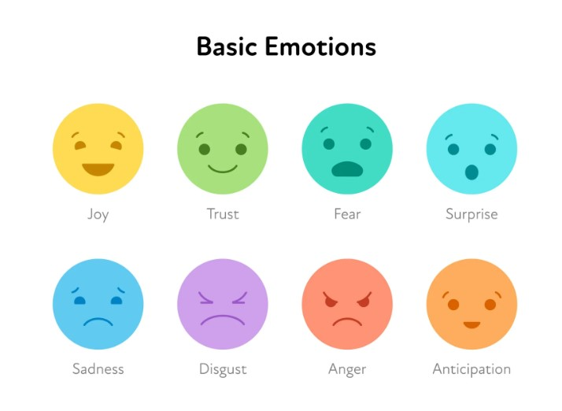

At Beyond Smile, we believe that happiness is the key to a fulfilled life. Our web application is designed to help individuals discover their unique happiness levels through a simple, research-based quiz. By answering questions rooted in psychological studies, users gain valuable insights into their emotional well-being and areas for self-improvement.
To empower individuals to understand and improve their happiness by providing insightful, research-backed quizzes and personalized self-improvement tips. HAFeel aims to promote self-awareness and mental well-being, helping users make informed choices that lead to a more fulfilled and joyful life.
Our vision is to become a leading platform for happiness assessment and self-improvement, fostering a global community that values emotional well-being, personal growth, and mental resilience. Through innovation and psychological expertise, we aspire to create a happier, more self-aware world.
